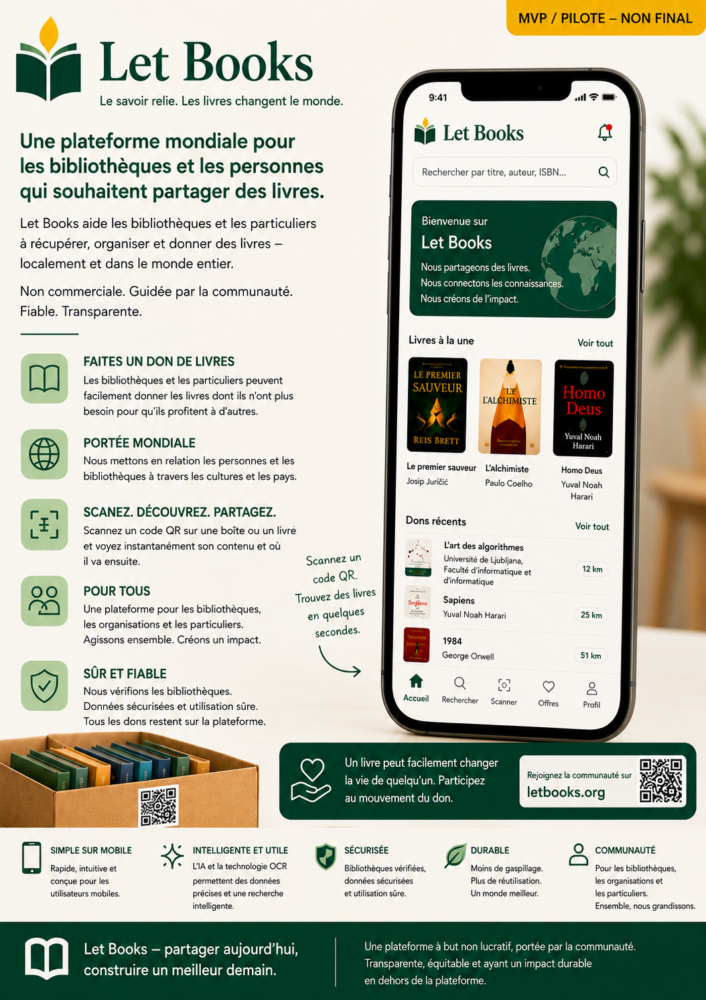

Note sur la phase alpha précoce
La documentation, les maquettes et les flux décrits sont encore en phase alpha précoce. Le contenu est assisté par IA et peut contenir des imprécisions, des détails provisoires ou des orientations futures.
Let Books aide les personnes, les bibliothèques et les futures structures hôtes à cataloguer des livres précieux, examiner les dons et retrouver ensuite précisément les exemplaires demandés.

La documentation, les maquettes et les flux décrits sont encore en phase alpha précoce. Le contenu est assisté par IA et peut contenir des imprécisions, des détails provisoires ou des orientations futures.
Un même titre peut exister en plusieurs exemplaires physiques, chacun avec son état, son emplacement et son résultat de don.
Scannez une boîte, voyez son contenu, ajoutez rapidement des livres et préparez plus tard le retrait sans approximation.
Exportez une liste, recueillez des décisions comme souhaité ou peut-être, puis générez une liste de retrait par emplacement.
Choisissez quelques points d'entrée concrets parmi le blog, les ressources d'apprentissage et le wiki.
Un bon modèle d'ingénierie pour l'IA n'est ni collègue ni remplaçant, mais oracle : utile, opaque et toujours à vérifier.
Ressources d'apprentissageCe guide explique comment relire une implémentation assistée par IA en la comparant à la spécification produit, aux règles de flux de travail, à la documentation et aux attentes de validation, plutôt qu’en jugeant seulement si le résultat paraît soigné ou techniquement plausible.
WikiMarkdown est un format pratique pour stocker l'intention du produit, la documentation, les guides et les preuves sous une forme consultable, portable, modifiable et facile à connecter aux flux de travail de validation.
SujetsComment plusieurs étapes de validation réduisent différentes classes d'erreur dans le contenu, la sortie générée, l'implémentation et les workflows de livraison.
Donateurs privés, familles et bénévoles qui cataloguent des livres par boîtes et emplacements.
Bibliothèques, écoles, archives et partenaires qui examinent et sélectionnent des livres.
Organisations hôtes et responsables opérationnels de l'accès, de la confidentialité et de la logistique.